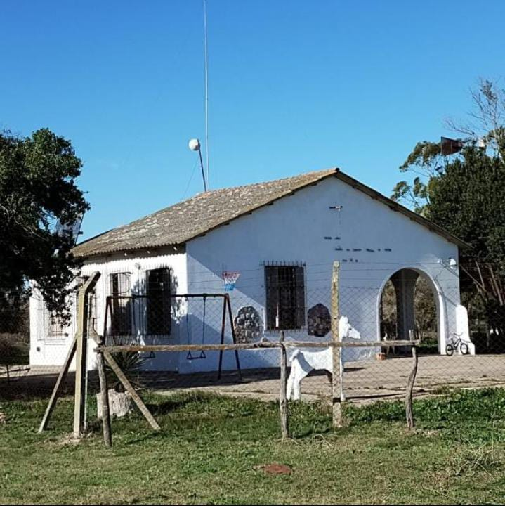

Estación Meteorológica Automática de
Escuela de Enseñanza Primaria N°23
"María del Carmen Traverso de Castelli"
Paraje San Martín, Magdalena Cargando...
🌡️ Temperatura
--°C
Hoy: mín --° · máx --°
💧 Humedad
--%
🎈 Presión
-- hPa
🌧️ Lluvia hoy
-- mm